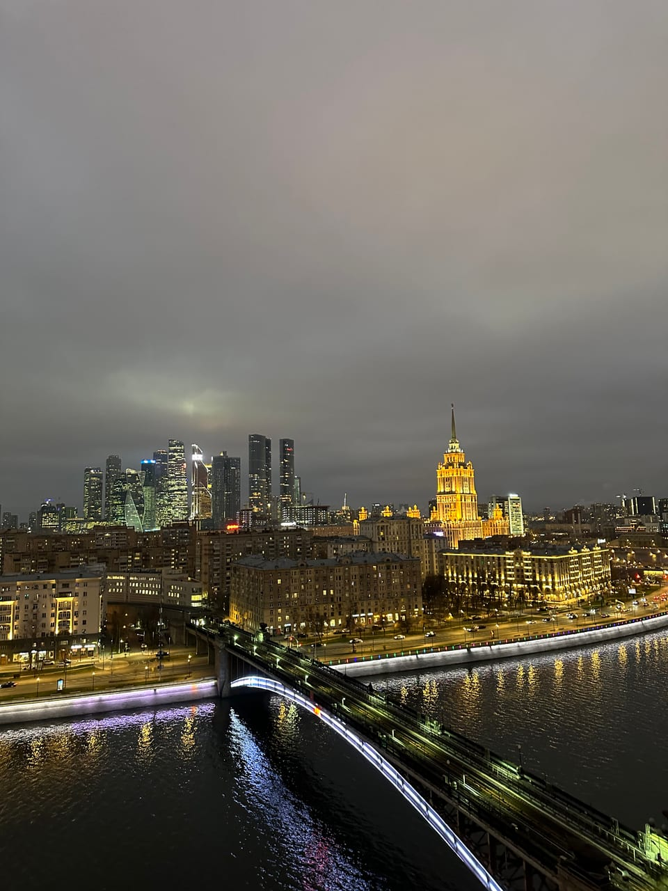

Статьи ·
Вид на Москву-реку с крыши: где река видна лучше всего
Река добавляет любой панораме передний план и отражения. Разбираем, на каких крышах каталога она входит в вид и в какой час работает сильнее всего.
Почему река делает кадр
Городская панорама без воды часто выглядит плоской: дома, крыши, небо. Москва-река решает сразу три задачи. Она даёт передний план, по которому взгляд заходит вглубь кадра. Она собирает свет: на закате вода держит цвет неба, вечером — огни набережных и мостов. И она добавляет движение — мост, теплоход, поток машин вдоль берега. Ниже — какие крыши каталога показывают реку и чем они отличаются.
Три крыши, где река входит в вид
Мы называем только то, что подтверждено фотографиями и описаниями площадок. Адреса крыш не публикуем: заранее известно лишь, у какого метро находится площадка.
Таганская Скатная: река и фактура ската
Крыша у метро Таганская устроена необычно: под ногами наклонные листы металла, а за ними открывается Москва-река. Скатная поверхность сама работает в кадре: линии ската уводят взгляд к воде. Если хочется не просто «вид», а графичный кадр с фактурой, смотрите на Таганскую Скатную.
Новокузнецкая: высотка через воду
С крыши у метро Новокузнецкая высотка на Котельнической набережной видна через реку. Вода даёт передний план и отражение, поэтому вечерняя подсветка здания дублируется в реке. Если выбирать одну крышу именно под связку «река плюс высотка», это Новокузнецкая.
Смоленская: мосты, вокзал и Сити за рекой
На крыше у метро Смоленская река идёт через весь вид: в кадр попадают Москва-река с мостами, в том числе Бородинский, и Киевский вокзал. За рекой стоят гостиница «Украина» и башни Сити, а на закате солнце уходит за Сити. Высотка МИД находится неподалёку, но крупным планом её получится снять только с зумом телефона. Это самая «широкая» речная панорама из трёх.
Когда вода работает лучше всего
Днём река светлая и спокойная: теплоходы, мосты, зелёные берега. Для документального кадра это хорошо, но отражений почти нет. Сильнее всего вода выглядит при низком свете.
- Закат. Река забирает цвета неба — оранжевый, розовый, сиреневый — и превращается в продолжение горизонта. Подробнее о том, как подгадать время, в нашей странице про закаты на крышах Москвы.
- Сумерки. Синий час даёт самый ровный фон: небо ещё светлое, а подсветка уже включена.
- Вечер. В тёмной воде появляются огни набережных и мостов, и река становится главным героем кадра. Часто именно такие кадры потом выбирают как лучшие.
Чтобы застать и закат, и огни на воде, обычно нужно больше времени, чем один час. Если площадка свободна, прогулку можно продлить: 500 ₽ с человека за час.
Как снимать реку на телефон
- Дайте воде занять нижнюю треть кадра. Тогда на ней читаются и отражения, и фактура, а небо остаётся выразительным.
- Держите линию горизонта ровно. Включите сетку в камере: на широкой панораме перекос заметен сразу.
- Ловите мост или теплоход. Подвижный объект в кадре оживляет даже пустую воду — снимайте серией и выбирайте лучший момент.
- Не лезьте к краю ради кадра. Снимайте с безопасной зоны площадки: на любой крыше с вами сопровождающий, и его просьбы по безопасности важнее ракурса.
- Вечером упирайтесь локтями или кладите телефон на парапет. В сумерках камера уходит в длинную выдержку, и руки без опоры дают смаз.
Что мешает хорошему кадру с рекой
Чаще всего портят снимок три вещи. Первая — блики: на воде в ясный полдень слепит солнце, и кадр выходит пересвеченным, поэтому ищите облачность или переносите съёмку ближе к вечеру. Вторая — стекло и ограждения: снимайте над парапетом, а не сквозь него, иначе в кадр попадут отражения и царапины. Третья — спешка: огни на воде разгораются постепенно, и первые минуты после заката часто оказываются лучшими. Не уходите сразу, когда небо погасло: вода ещё какое-то время хранит цвет, а город включает подсветку.
Как выбрать крышу
Если хочется графики и необычной фактуры — Таганская Скатная. Если нужен классический речной вид с высоткой в отражении — Новокузнецкая. Если важна ширина панорамы с мостами, вокзалом и Сити за рекой — Смоленская. Полный список площадок с фотографиями, сделанными на месте, — в каталоге на главной. Набор крыш меняется, поэтому перед записью стоит проверить, какие доступны сейчас.
Как проходит прогулка
Вы выбираете крышу и время, оставляете заявку на сайте или пишете в Telegram-бот. Точное место встречи сообщаем после подтверждения записи. На площадке вас встречает сопровождающий, коротко объясняет правила, и дальше у вас час на виды и фотографии. Стоимость — от 2000 ₽ за человека. Снимать можно на телефон или прийти со своим фотографом; мы не обещаем погоду, поэтому смотрите прогноз по облачности и ветру: для отражений нужен хотя бы просвет в небе, а на высоте всегда свежее, чем внизу.
Читайте также: «Где смотреть закат в Москве» — как подгадать прогулку под золотой час, «Вечерняя Москва с крыши» — что видно после заката и когда стоит продлить час, и «Высотка на Котельнической» — три ракурса на высотку, в том числе через реку.
FAQ
Частые вопросы о виде на реку
С каких крыш каталога видна Москва-река?
Река входит в подтверждённый вид у Таганской Скатной, Новокузнецкой и Смоленской. Новокузнецкая показывает её вместе с высоткой на Котельнической, Смоленская — с мостами и башнями Сити за рекой. Точное место встречи сообщаем после подтверждения записи.
Когда река в кадре смотрится лучше всего?
На закате, когда вода отражает небо, и вечером, когда в ней появляются огни города и мостов. Днём река тоже красива, но сильнее всего работает при низком свете.
Можно ли продлить прогулку, чтобы застать огни на воде?
Да, если площадка свободна: продление стоит 500 ₽ с человека за час. Базовый формат — 1 час, цена от 2000 ₽ за человека.
Над городом